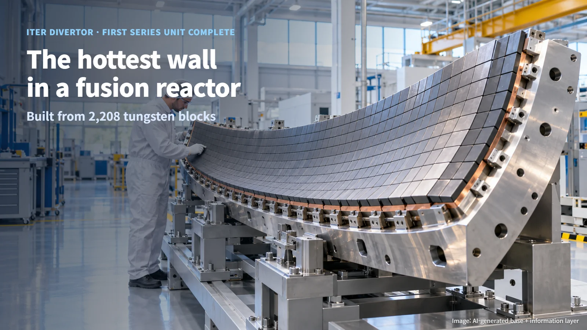
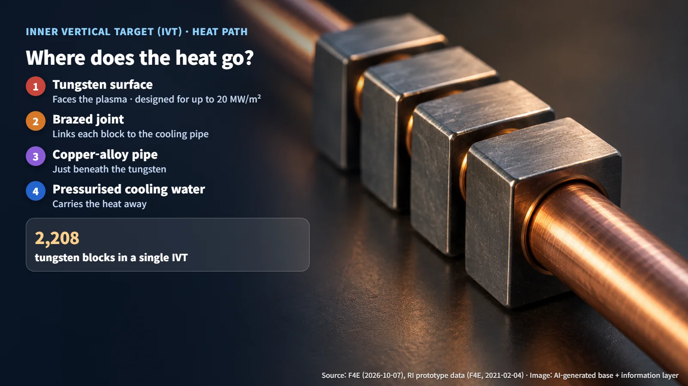
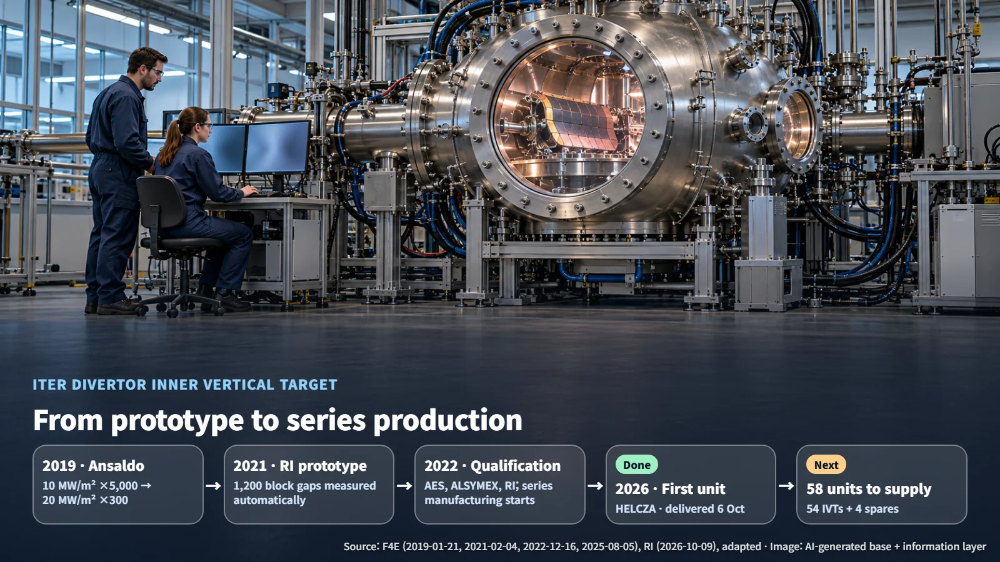

Europe · Fusion
The Hottest Wall in a Fusion Reactor: ITER's First Series-Produced Divertor Inner Vertical Target
The first series-produced divertor Inner Vertical Target for ITER, built from 2,208 tungsten blocks, has been delivered after years of prototype heat-load testing.
When people think of fusion, they usually picture plasma as hot as the Sun. That raises a practical question: how do you build the component that takes that heat head-on, and how do you confirm it can survive? At ITER, the international fusion project, the first series-produced unit of exactly that kind of component has now been completed: the divertor Inner Vertical Target (IVT). Built by Fusion for Energy (F4E), the European procurement agency for ITER, together with Research Instruments (RI) of Germany, this part offers a good way to answer both questions. Let's follow it from its role inside the machine, through its construction, to the long series of tests behind it.

The Divertor: A Fusion Reactor's Exhaust
The divertor sits at the bottom of the vacuum vessel and removes heat, helium ash and impurities coming out of the plasma. Helium ash is what remains once the fusion reactions are done, a kind of burnt-out residue. Just as a fireplace needs a chimney to keep the fire going, a fusion reactor needs to carry away heat and ash continuously to sustain its reactions.
The IVT is a plasma-facing component of this divertor, meaning it looks directly at the plasma. F4E gives the maximum heat flux on the divertor's plasma-facing surfaces as 20 MW/m². Heat flux is the amount of heat arriving per unit of surface area, and this figure is the maximum condition the component is designed to withstand. Picture a narrow metal wall under a relentless stream of intense heat, and you have a sense of where this component lives. Every design choice in the IVT, from its surface material to its cooling, follows from that demanding environment.
2,208 Tungsten Blocks and Their Cooling Pipes
A single IVT contains 2,208 precision-machined tungsten blocks. These blocks are joined to cooling pipes by brazing, then welded and assembled onto a curved steel structure. Brazing joins two parts by melting a filler metal with a lower melting point between them, much like soldering metal together. Tungsten has a very high melting point, which is why it is used on the surface that takes the heat directly. The steel structure underneath gives the whole assembly its shape and holds the blocks in position.
According to RI's prototype material, pressurised water flows through a copper-alloy pipe just beneath the tungsten to remove the heat. Heat travels from the tungsten surface, through the joint, into the copper-alloy pipe and finally into the cooling water. That is why verification covers the soundness of the entire cooling path along with the surface material. The 2,208 tungsten blocks sit tightly packed along the cooling pipes, and every one of those joints is a passage the heat must pass through on its way out.

The Tests That Led from Prototype to Series Production
Several rounds of testing came before the first series unit. A prototype from Italy's Ansaldo Nucleare, announced in 2019 (1,104 tungsten blocks, mass 0.5 t), was tested at the Efremov Institute in Russia. Its curved section was heated 5,000 times at 5 MW/m², and its straight section 5,000 times at 10 MW/m², followed by a further 300 cycles at 20 MW/m². After those tests succeeded, hydraulic, leak and dimensional inspections followed. Heating up and cooling down thousands of times lets engineers rehearse, in advance, the repeated heat loads the component will face in operation.
RI's 2021 prototype followed a path that began with small mock-ups, moved on to a full-size prototype, included automated measurement of 1,200 gaps between blocks in the pre-assembled state, and then led to preparation for high-heat-flux testing. This route confirmed both the scale-up of the joining process to a large component and the precision of assembly. Each step built confidence on a larger and more realistic scale before the next one began. In 2022, the AES consortium (Ansaldo Nucleare, Ansaldo Energia and SIMIC), ALSYMEX and RI achieved qualification, and F4E announced the start of series manufacturing.
The test facilities were prepared in parallel. HELCZA, the test facility of Research Centre Řež (CVŘ) in the Czech Republic, completed testing of first wall components and then went through decontamination and a facility redesign to be converted for IVT samples. A 2025 announcement set out a test plan covering RI first and then ALSYMEX, and a 2026 announcement reported that testing of RI's component had been carried out.

Next Steps Toward 58 Units
RI gives 6 October 2026 as the delivery date of the first series unit. The news was announced by F4E on 7 October, by RI on 9 October and by ITER on 19 October. This first unit is the product of a supply chain linking more than 60 suppliers with a structural manufacturer in Italy.
F4E's supply responsibility is 58 units: 54 IVTs plus 4 spares. The publicly disclosed contracts are 28 units for RI and 13 for ALSYMEX. With the first unit complete, the next stage is the acceptance and delivery of subsequent units and repeated manufacturing. The task now is to produce the remaining units steadily, at the same quality. Detailed defect tolerances, non-destructive examination methods and leak-rate limits for the series units have not been disclosed. Points to watch from here are how each unit's manufacturing history is tied to its test conditions and managed, and how progress on repeated manufacturing is reported.
A wall built to take Sun-like heat started as a small mock-up and became a series product through thousands of heating cycles and 1,200 gap measurements. This component shows that the grand goal of fusion ultimately rests on making each block, and each joint, exactly right.